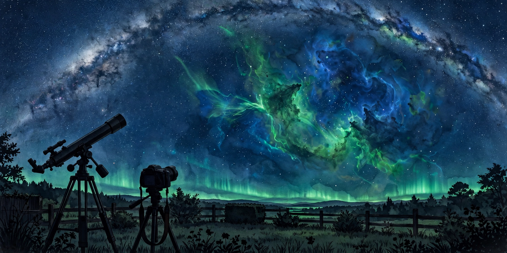

October 24, 2026
Astronomy magazine's 2026 astrophotography contest has its winners

Illustration by The Discovery Wire (generated artwork for this story)
Astronomy magazine just announced the winners of its 2026 astrophotography contest — the first the magazine has run in 13 years — and the top honor went to a pair of ghostly dark clouds guarding the corpse of an exploded star.
More than 1,400 entries poured in from photographers around the world: faint nebulae, planetary close-ups, dramatic solar images, and nightscapes. The magazine's editors, with a panel of guest judges including Tony Hallas, Molly Wakeling, Michael Bakich, planetary imager Damian Peach, and Editor Emeritus Dave Eicher, chose a grand-prize winner, eight category winners, and 22 runners-up.
The grand prize: "The Dementors of Cepheus"
The winning image shows shadowy, wraithlike dark nebulae drifting through glowing filaments of gas — the filaments are the remnants of supernova SNR G110.3+11.3, the wreckage of a massive star that blew apart. The imagers, Julien De Winter, Landon Boehm, and Brian Diaz, nicknamed the dark figures "the Dementors of Cepheus."
The technical sheet tells the story of the effort: November 2025 through January 2026 at Starfront Observatories in Rockwood, Texas, with a 7-inch Takahashi Epsilon-180ED astrograph and ZWO ASI6200MC Pro and ASI6200MM Pro cameras. Total exposure time: 29.6 hours. Judges called the image "sensational" and "impressive," and contributing editor Molly Wakeling praised its sense of depth — "If you can get that 3D feel to it, that's when you know you've made it." The team wins a Celestron RASA 8 astrograph.
The category winners
- Deep Sky — Broadband: Prasaad Milner — the Blue Horsehead Nebula and Rho Ophiuchi cloud complex
- Deep Sky — Narrowband: Emmanuel Joly — the Sharpless 2-115 complex in Cygnus
- Solar System Objects: Simon Labergère — Saturn with Titan and Tethys
- Solar Imaging: Mehmet Ergün — the active Sun in hydrogen-alpha
- Nightscapes: Tom Rae — the Milky Way over Aoraki/Mount Cook National Park, New Zealand
- Smartscopes: Nathanael Martin — the Angel Nebula (NGC 2170)
- Processing: Marius Dinga — RCW 38
- Newcomer: Andy Garrett — the Rosette Nebula
The Newcomer category was open to photographers ages 13 to 17 or anyone with fewer than two years of experience — and in the Processing category, entrants didn't need imaging gear at all: everyone worked from the same free Telescope Live dataset. The Smartscopes category gave imagers using all-in-one smart telescopes their own level playing field.
The December 2026 issue of Astronomy carries full captions for every winning image, along with profiles of the photographers.
Why this matters to us
We cover discoveries, but this contest is a reminder of something we think about a lot: astronomy has never been only a professional enterprise. Some of the winning objects are so faint and extended that professional astronomers have never paid them any attention — amateurs are genuinely at the forefront of exploring the cosmos, one long exposure at a time. The winning grand-prize image took three months. Some breakthroughs take three seconds. Both count.
See every winner and runner-up in the magazine's winners gallery: https://www.astronomy.com/observing/announcing-the-winners-of-astronomy-magazines-2026-astrophotography-contest/
Source: Astronomy magazine — read the original report
← Back to latest stories